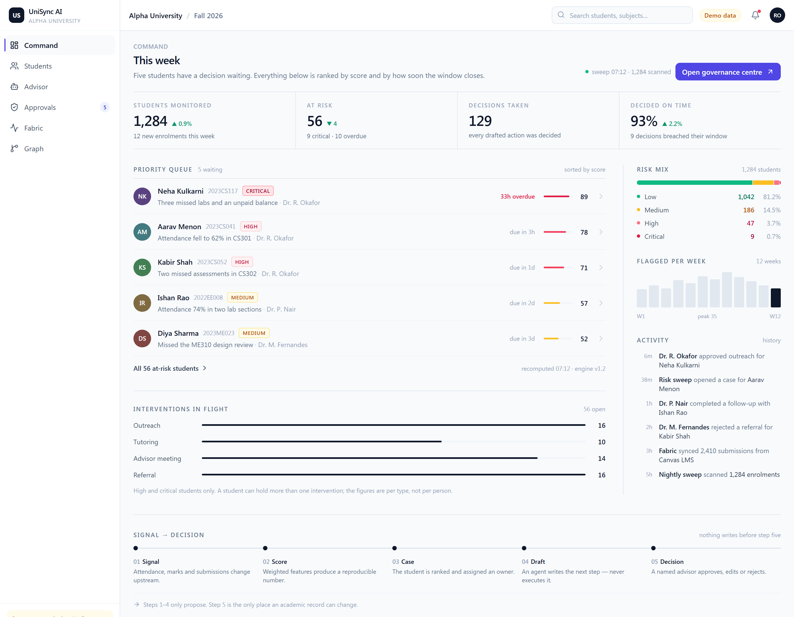
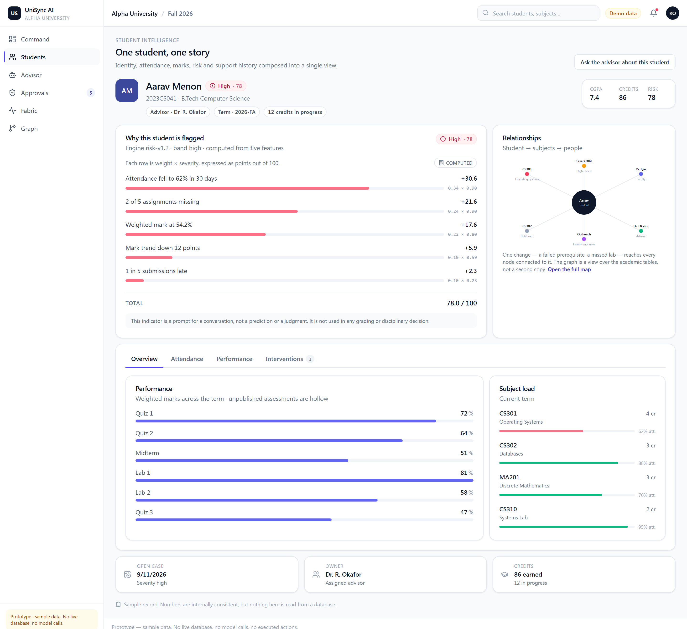
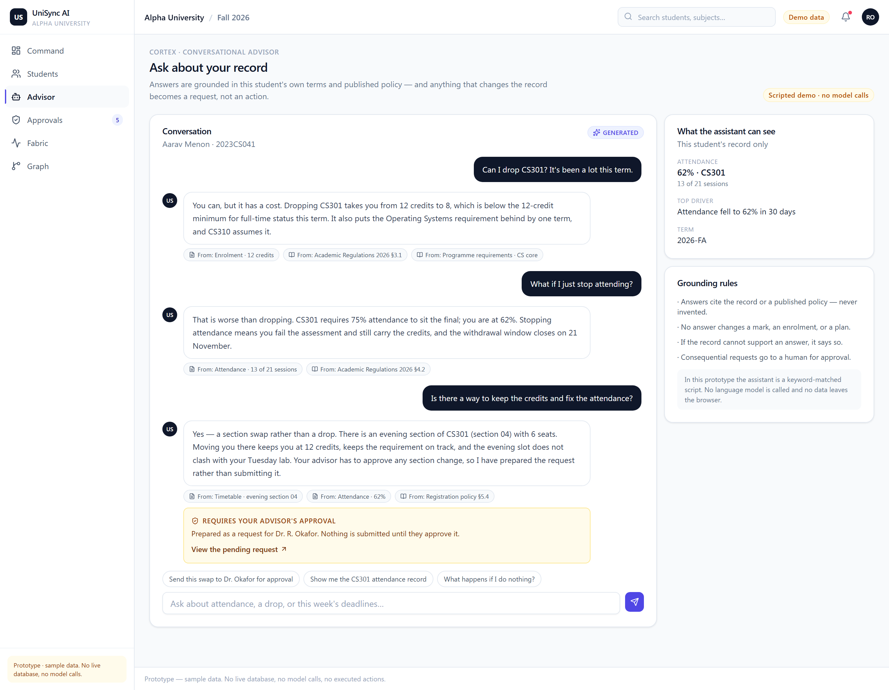
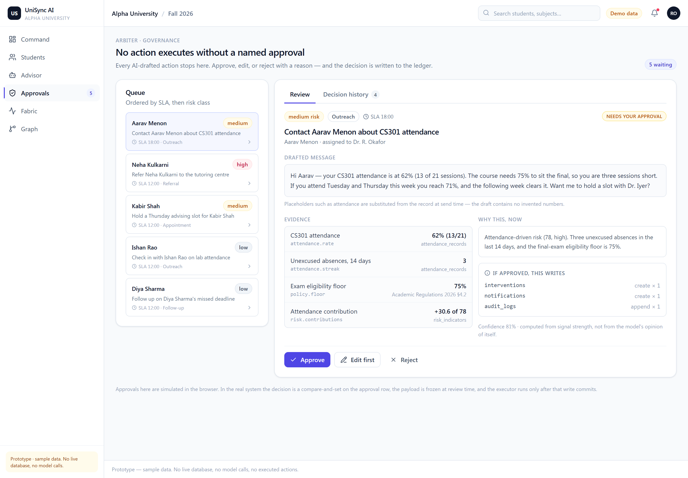
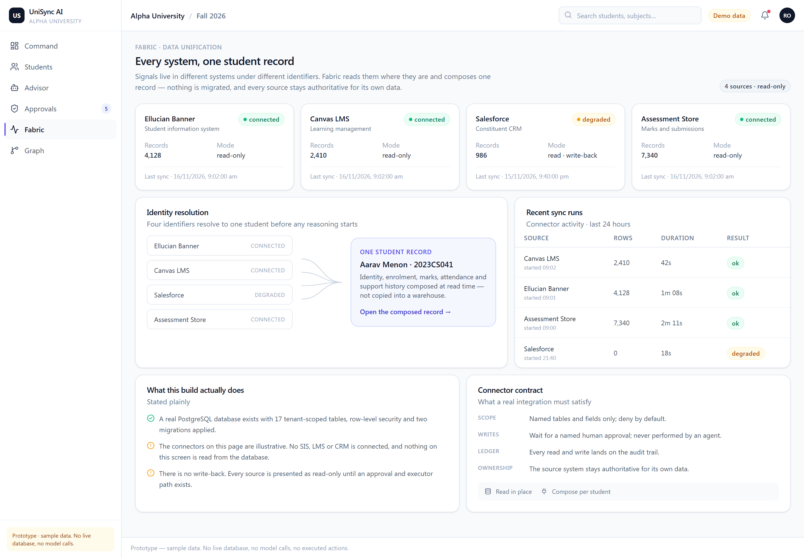
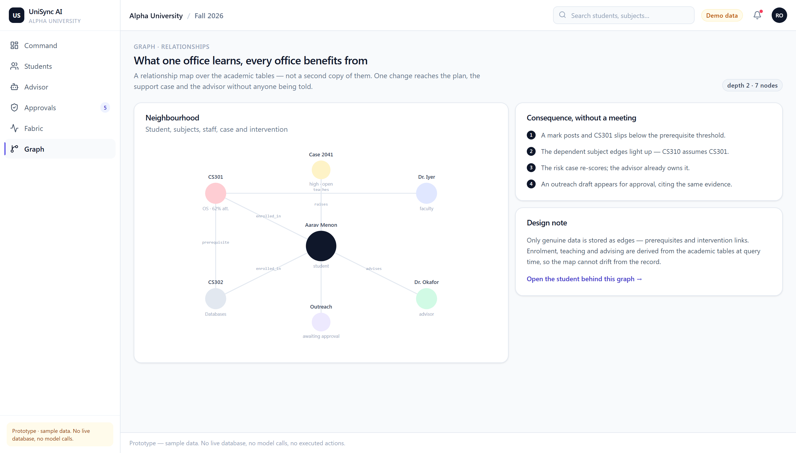
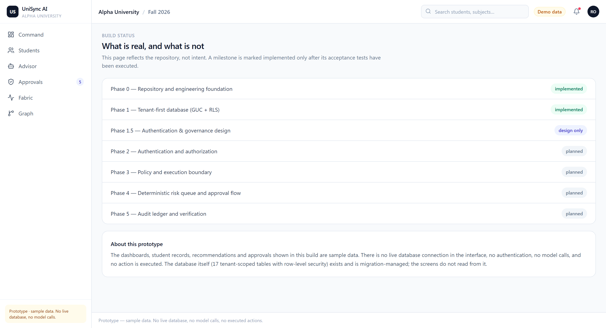

| PRN No. | Branch | Name of Student |
|---|---|---|
| 202501100058 | Computer Engineering (Software Engineering) | Aditya Mendhe |
| 202501100051 | Computer Engineering (Software Engineering) | Gaurav Kotkar |
| 202501100046 | Computer Engineering (Software Engineering) | Sumit Tayade |
| 202501100056 | Computer Engineering (Software Engineering) | Vishal Daregave |
This is to certify that the Software Prototype Project entitled “UniSync AI – Intelligent Academic Coordination & Personalized Student Support” has been carried out by Group No. 2 of SY B.Tech Computer Engineering (Software Engineering) under the guidance of Dr. Manish Giri, Course Instructor, in partial fulfilment of the requirements of the Software Prototyping course during the academic year 2026–2027.
The project work presented in this report is the original work carried out by the students and has been completed as per the curriculum prescribed by Savitribai Phule Pune University.
We would like to express our sincere gratitude to our respected Software Prototyping course instructor, Dr. Manish Giri, for providing us with valuable guidance, continuous encouragement, and constructive suggestions throughout the development of our software prototype project.
We are also thankful to MIT Academy of Engineering for providing us with the opportunity and the necessary resources to complete this project successfully.
Finally, we thank all our team members for their cooperation, dedication, and teamwork throughout every phase of this project, including problem identification, AEIOU analysis, the Software Requirement Specification, UML design, database design, and prototype development.
Educational institutions operate ERP, learning-management, attendance and examination systems in parallel. Students and advisors therefore reconstruct academic state by hand from several portals, and no single system is responsible for noticing that a student is drifting until it is too late to intervene.
UniSync AI unifies those signals into one tenant-isolated academic record and places a governance layer on top of it. The platform is organised around four engines: Fabric reads institutional data sources in place rather than copying them; the Agent Graph exposes the relationships between students, subjects, staff and interventions; Cortex orchestrates the reasoning workflows; and Arbiter holds every consequential action behind a named human approval.
Two properties are treated as non-negotiable. Risk scoring is deterministic: weighted features with piecewise severity, where every contribution is stored and displayed so an advisor can re-derive the number rather than trust it. And agents cannot write: they may only propose, and an executor runs only after an approval has been written in its own committed transaction.
This report documents the design and the working prototype. The relational core is real — a PostgreSQL 16 schema of seventeen tenant-scoped tables, row-level security enabled and forced on every one, composite tenant foreign keys that make cross-tenant references structurally impossible, and fifty automated database tests. The interface is a presentation prototype of seven screens driven by sample data; it does not read from the database and it makes no model calls. Authentication, the audit-ledger writer and the executor services are designed and specified, but not yet implemented.
Keywords: academic management, ERP, learning management system, student information system, multi-tenant architecture, row-level security, explainable risk scoring, human-in-the-loop, software prototype, AEIOU framework, UML, SRS.
The rapid digital transformation in educational institutions has led to the adoption of many academic platforms — ERP systems, learning management systems, attendance portals, examination portals and messaging channels. Each of these systems performs its own function adequately, but they operate independently. The consequence is not merely inconvenience: no single system is responsible for the student as a whole, so the signals that together indicate a student is at risk stay separated across four databases and three logins.
UniSync AI addresses both halves of that problem. It unifies academic information into one tenant-isolated record, and it adds the layer that fragmented systems never provide — a layer that notices a pattern, explains it with evidence, drafts the next step, and then stops and waits for a human being to approve it.
In many institutions, academic information is distributed across ERP systems, learning management systems, attendance portals, examination portals and communication channels. Students and faculty must repeatedly switch between these systems to reach attendance, marks, assignments, notifications and academic records.
This fragmentation produces poor academic coordination, delayed communication and increased administrative effort. More seriously, it delays detection: a student who has stopped attending one subject, missed two submissions and slipped twelve marks behind is visible in three systems, but is visible as a whole in none of them. By the time the pattern is noticed by a person, the correction window has usually closed.
Develop a web application that unifies academic information from multiple institutional systems into a single platform, and adds a governance layer over it. The platform must:
Design and implementation of a multi-tenant web application that unifies fragmented academic information into a single governed platform, identifies students requiring support through a deterministic and explainable risk assessment, and ensures that no consequential academic action is executed without a named human approval and an audit record.
Educational institutions have rapidly adopted digital technologies for managing academic activities. However, most institutions still rely on multiple independent systems, each with its own login, identifier and export. Students struggle to track attendance, assignments, results and progress because the information is scattered. Faculty spend significant time re-entering the same updates in different systems. Administrators struggle to keep records consistent across all of them.
A second problem sits underneath the first. The systems that do hold this data are systems of record, not systems of attention. They answer “what is this student's attendance?” but never “which students should I speak to this week, and why?”. That question currently gets answered by memory, by hallway conversation, and by whoever happens to notice.
The motivation behind UniSync AI is therefore twofold: to remove the mechanical cost of living in several portals, and to make early academic support a repeatable, evidence-backed process rather than an accident of who was paying attention.
The AEIOU framework is a user-centred observation technique used during the Design Thinking process to understand user behaviour, identify existing problems, and collect requirements before developing a software solution. AEIOU consists of five elements: A – Activities, E – Environment, I – Interactions, O – Objects, and U – Users. The observations collected using these five components identified the real problems that guided this prototype.
The Activity sheet records the daily academic tasks performed by students, faculty and administrators: student registration and login; checking attendance and marks; viewing and uploading assignments; uploading marks; managing academic records; and sending or receiving notifications. These observations exposed the repetition — the same attendance entry typed into a register, then an ERP, then a spreadsheet — and the gaps, where an activity has no owner at all.
The Environment sheet focuses on where academic activity physically and digitally takes place: the campus, classrooms, computer laboratories, ERP systems, learning management systems and administrative offices. Studying these environments showed that the digital environments are partitioned by role and by department, so information crosses them only through people.
The Interaction sheet examines how students, faculty and administrators exchange academic information: faculty sharing assignments, students submitting work, attendance updates, academic announcements, result publication and communication through ERP and LMS portals. The recurring finding was that support conversations happen outside every system — in person and on messaging apps — and are therefore invisible to the institution.
The Object sheet identifies the physical and digital objects in use: student identity cards, ERP and LMS dashboards, mark sheets, attendance registers, assignment documents, course information and notification panels. These objects were the raw material for the unified record.
The User sheet identifies every stakeholder: students, faculty members (including academic advisors), and administrators. Each has different responsibilities and different questions of the system. The prototype is designed around the advisor's question — “who needs me this week, and why?” — because that is the role where the absence of a unified view has the highest cost.
Based on the AEIOU observations, the following user requirements were identified.
Non-functional requirements describe the qualities and constraints of the system as a whole. For this project they are not decoration: several of them are the product.
Functional requirements describe what the system must do. The table below lists each function once, shows which roles may use it, and — importantly for this report — states its current status.
| No. | Function | Student | Advisor | Admin | Status |
|---|---|---|---|---|---|
| Platform foundation | |||||
| 1 | Tenant-isolated relational core | — | — | ✓ | Implemented & verified |
| 2 | Row-level security on every tenant table | — | — | ✓ | Implemented & verified |
| 3 | Automated database tests | — | — | ✓ | 50 passing |
| Common | |||||
| 4 | Register an account | ✓ | — | — | Designed |
| 5 | Log in / establish a session | ✓ | ✓ | ✓ | Designed |
| 6 | Forgot and reset password | ✓ | ✓ | — | Designed |
| 7 | Role-appropriate landing screen | ✓ | ✓ | ✓ | Advisor view only |
| Student | |||||
| 8 | View academic profile, marks and attendance | ✓ | ✓ | — | Prototype |
| 9 | Understand own risk factors | ✓ | — | — | Prototype |
| 10 | Ask the academic advisor (grounded Q&A) | ✓ | — | — | Prototype (scripted) |
| 11 | Receive notifications | ✓ | — | — | Planned |
| Advisor | |||||
| 12 | Institution command dashboard | — | ✓ | ✓ | Prototype |
| 13 | Student intelligence view | — | ✓ | — | Prototype |
| 14 | Explainable risk breakdown (weight × severity) | — | ✓ | — | Prototype · engine designed |
| 15 | Review a proposed action with its evidence | — | ✓ | — | Prototype |
| 16 | Approve, edit or reject with a reason | — | ✓ | — | Prototype (simulated) |
| 17 | Intervention history and outcomes | — | ✓ | — | Prototype |
| 18 | Record attendance and marks | — | ✓ | — | Planned |
| Administrator | |||||
| 19 | Manage users, faculty, students and courses | — | — | ✓ | Planned |
| 20 | Approve student registrations | — | — | ✓ | Planned |
| 21 | Generate academic reports | — | — | ✓ | Planned |
| 22 | Monitor data-source health (Fabric) | — | — | ✓ | Prototype (sample) |
| 23 | Relationship map (Agent Graph) | — | ✓ | ✓ | Prototype |
| Platform services | |||||
| 24 | Audit ledger of consequential actions | — | — | ✓ | Designed |
| 25 | Deterministic risk engine service | — | — | ✓ | Designed |
| 26 | Agent orchestration (propose only) | — | — | ✓ | Designed |
| 27 | Executor services (approved writes only) | — | — | ✓ | Designed |
Three representative functions are specified below in the standard form.
| Name | 13. Student Intelligence View |
| Purpose | Present one student's complete academic situation — attendance, marks, risk drivers, relationships and support history — to their advisor. |
| Input | Student identifier, within an authenticated tenant context. |
| Output | Profile, per-subject attendance and weighted marks, a twelve-week attendance map, a risk score with its contributions, and the intervention timeline. |
| Users | Faculty / Advisor |
| Pre-condition | A tenant context is bound to the transaction; the reader may see this student. |
| Post-condition | Nothing is written. The view is read-only by construction. |
| Name | 16. Approve, Edit or Reject a Proposed Action |
| Purpose | Give a named human the decision over an action drafted by an agent. |
| Input | Proposed action identifier, decision (approve / edit / reject), optional edited text, mandatory reason when rejecting. |
| Output | An approval record, a status transition on the proposed action, and an audit entry. On approval only, the executor becomes eligible to run. |
| Users | Faculty / Advisor (the assignee, or a delegate) |
| Pre-condition | The action is still in the proposed state and within its SLA. |
| Post-condition | The decision is durable and attributable; no academic record is modified by the approval itself. |
| Name | 10. Ask the Academic Advisor |
| Purpose | Answer a question about the student's own record in plain language, with the evidence attached. |
| Input | A free-text question, scoped to the authenticated student. |
| Output | An answer carrying citations to either a stored fact or a published regulation; a proposed request when the question implies a record change. |
| Users | Student |
| Pre-condition | Login successful; the record exists within the tenant. |
| Post-condition | No record is modified. Anything consequential becomes a pending approval, never an executed change. |
The following limitations apply to the prototype presented in this report. They are stated deliberately rather than discovered later.
The AEIOU observations were converted into requirements and then into features. The mapping is shown below, together with the state each feature has reached.
| Observation (AEIOU) | Requirement | Feature | State |
|---|---|---|---|
| Information scattered across ERP, LMS and portals | One place to view academic data | Student intelligence view; Fabric | Prototype |
| Risk noticed too late, by memory | Early, explainable detection | Deterministic risk score with contributions | Prototype · engine designed |
| Support conversations happen outside every system | Record what was done and what happened | Intervention history | Prototype |
| Automation is distrusted in academic settings | Human authority over every write | Arbiter approval centre | Prototype |
| Institutions cannot share a deployment safely | Isolation in the database | RLS + composite tenant keys | Implemented |
| Faculty repeat data entry | Single entry point | Attendance and marks capture | Planned |
| Administrators cannot see system health | Integration monitoring | Fabric source status and sync runs | Prototype (sample) |
This chapter presents the system design: the UML views that describe behaviour, the relational design that enforces isolation, and the invariants that govern what the system is allowed to do. The diagrams were produced for the system as designed — not as initially imagined — and therefore differ in places from an ordinary CRUD academic portal.
Unified Modeling Language is a standard graphical language for visualising and documenting a system. Three views are used here: a use case diagram for the actors and their goals, an activity diagram for the end-to-end flow including the human decision, and a sequence diagram for the messages exchanged during a review and approval.
Three actors interact with the system: the Student, the Faculty member acting as academic advisor, and the Administrator. The boundary encloses the platform. Note that “Request a record change” is separate from “Approve a request”: the student may ask, but only the advisor may authorise.
The activity diagram follows the path from a student record being opened to an approved action being executed. The decisive feature is the second decision node: the executor is reached only through an approval, and a rejection still produces an audit record.
The sequence below shows the review-and-approve flow across four participants. Two details matter:
the approval is a compare-and-set against the proposed state, and the executor is
invoked only after that write has committed.
Low fidelity prototypes address layout, navigation and flow rather than appearance. Early sketches were produced in Canva to agree on the three-panel shape — navigation, list, detail — before any visual design was attempted. These sketches settled one question early: the advisor's primary question is a queue, not a dashboard of charts, so the ranked list became the anchor of the application and the charts became supporting context.
The high fidelity prototype was built directly in code rather than in a design tool, so that what is demonstrated is what exists. It is a Next.js 15 application using React 19, TypeScript and Tailwind CSS, with a small set of hand-authored interface primitives and charts drawn as inline SVG.
Tools used
The relational core is the part of the system that exists in full. It is organised as two migrations:
a tenancy foundation, and an academic core. Every table carries institution_id, and every
reference between tenant tables is a composite foreign key that includes the institution — so a row
in one institution cannot point at a row in another, even if row-level security were disabled.
| Migration | Tables | Purpose |
|---|---|---|
| 0001 — Tenancy foundation | 6 | institutions, departments, users, faculty,
students, advisor_assignments — identity, organisation and the
student–advisor relationship. |
| 0002 — Academic core | 11 | terms, subjects, subject_prerequisites,
subject_offerings, enrollments, class_sessions,
attendance_records, assessments, assignments,
marks, submissions — the teaching and assessment model. |
Three design decisions are worth recording. First, join integrity: attendance, marks and submissions are pinned to the same offering, term and institution as the enrolment they belong to, by four-column composite keys, so a record cannot be attached to the wrong class. Second, deferred constraints: assessment weightings are validated at commit rather than at each statement, which allows a weighting to be rebalanced across several rows in one transaction. Third, explicit indexes on every foreign key — an audit found eleven keys that had no leading-column index, and all were added before the migration was finalised.
The following invariants are not implementation details; they are the security model, and the test suite asserts them.
USING and WITH CHECK.NULL for a missing and for a malformed value, so an unset context
yields no rows rather than all rows.This chapter presents the seven screens of the working prototype. They are presented in the order of the demonstration journey: the institution view, then one student, then a conversation, then the governance decision, then the data foundation behind it.
Purpose. Answer “who needs me this week?” in one screen. A rule-separated measure strip states the institution's position without decorating it; the priority queue below is the primary object — each row names the student, the single strongest driver, the owning advisor, the SLA and the score. The right rail carries proportion and history rather than decoration: a stacked risk bar, a twelve-week trend and a compact activity trace. The closing band states the governance rule that shapes the rest of the product: four steps may propose, only the fifth may write.

Purpose. Present one student's whole situation, and make the risk score verifiable. The breakdown shows each feature's weight and severity and the points it contributes; the five contributions sum to the displayed total. Attendance is shown as a twelve-week map, performance as a per-assessment series, and support work as a timeline. The relationship map on the right shows what else the student is connected to.

Purpose. Let a student ask about their own record and get an answer they can check. Every assistant reply carries citation chips pointing at either a stored fact or a published regulation, and a Generated label. When a question implies a change — dropping a course, for example — the reply stops being an answer and becomes a request: an inline panel states that the advisor must approve it, with a link to the approval centre.

Purpose. Hold every drafted action until a named human decides. The queue orders work by SLA and risk class. The review pane shows the draft, the evidence behind it as fact-and-source pairs, the reasoning, and the exact tables the action would write to if approved. The advisor may approve, edit first and then approve, or reject with a mandatory reason; each decision produces a receipt and a ledger entry, and the item moves to the decision history.

Purpose. Show where the signals come from before any reasoning begins. Four sources are presented with connection state, record counts, last sync and their access mode — all read-only until an approval path exists. The identity-resolution diagram shows four identifiers resolving to one student before analysis starts, and the panel on this screen states plainly which parts are illustrative.

Purpose. Make the relationships visible. The map is a view over the academic tables rather than a second copy of them: enrolment, teaching and advising are derived at query time, so the map cannot drift from the record. The panel beside it walks through how one change propagates — a mark slips, the dependent subject lights up, the case re-scores, and a draft appears for approval.

Purpose. State what is real. This screen is part of the prototype deliberately: it lists each milestone with its true state, and explains that the database exists while the interface does not yet read from it. It is the page that prevents the demonstration from overstating itself.

| No. | Screen | Route | Primary purpose |
|---|---|---|---|
| 1 | Command Dashboard | / | Institution-wide triage and trend |
| 2 | Student Intelligence | /students/[id] | One student, explained |
| 3 | AI Academic Advisor | /advisor | Grounded, cited conversation |
| 4 | Arbiter Governance Centre | /approvals | Human decision over drafted actions |
| 5 | Fabric | /fabric | Sources, identity resolution, sync health |
| 6 | Agent Graph | /graph | Relationships and propagation |
| 7 | Build Status | /status | Honest state of the build |
| Element | State | Evidence |
|---|---|---|
| PostgreSQL schema, 17 tenant tables | Real | Two migrations applied; revision 0002_academic_core |
| Row-level security and tenant keys | Real | Asserted by the database test suite |
| Database test suite | Real | 50 tests in the database suite |
| Web interface | Prototype | Seven routes, builds and type-checks cleanly |
| Student names, marks, attendance | Sample | Seeded population of 1,284; deterministic and internally consistent |
| Aggregate figures on the dashboard | Derived | Computed from the population, not typed into the markup |
| Risk contributions shown on screen | Sample | Computed by the specified weighting, from sample features |
| Approval decisions | Simulated | Browser memory; resets on reload |
| Advisor conversation | Scripted | Keyword match; no model call |
| Authentication and sessions | Designed | Not implemented |
| Audit ledger writer | Designed | Not implemented |
| Risk engine and executor services | Designed | Not implemented |
UniSync AI began from a familiar observation: academic information is spread across systems that do not talk to each other. The work described in this report takes that observation one step further. Fragmentation is not only an inconvenience for the people who must visit four portals — it is the reason a student in difficulty is noticed late, by chance, and without evidence.
The design therefore does two things at once. Fabric unifies the sources into one tenant-isolated record, and the governance layer turns that record into a decision: a deterministic score that can be re-derived, a draft intervention that carries its evidence, and a required human approval before anything is written. Determinism and human authority were treated as non-negotiable constraints rather than features, because an academic system that silently changes records, or that cannot explain a number it produced, would not be trusted by the people expected to use it.
The prototype reached two different levels of maturity, and the report has been careful to keep them apart. The relational core is complete and tested: seventeen tenant-scoped tables, row-level security forced on every one, composite tenant keys that make cross-tenant references impossible, and fifty automated tests. The interface is a presentation prototype of seven screens over sample data. It demonstrates the intended experience — triage, explanation, governed decision — without claiming a backend it does not yet have.
The remaining work is well defined rather than speculative: authentication and sessions, the audit-ledger writer, the deterministic risk engine as a service, the agent runtime restricted to proposals, and the executor services that perform approved writes. Each has a written specification and a set of acceptance tests that must pass before it is claimed as complete. The prototype demonstrates feasibility; the invariants described in Chapter 3 are the foundation on which the remaining implementation can safely be built.